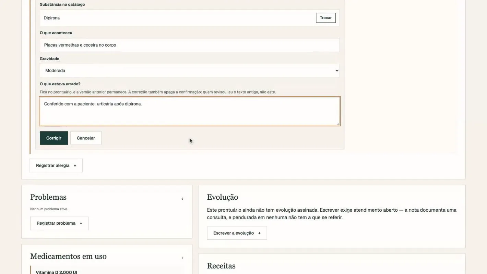
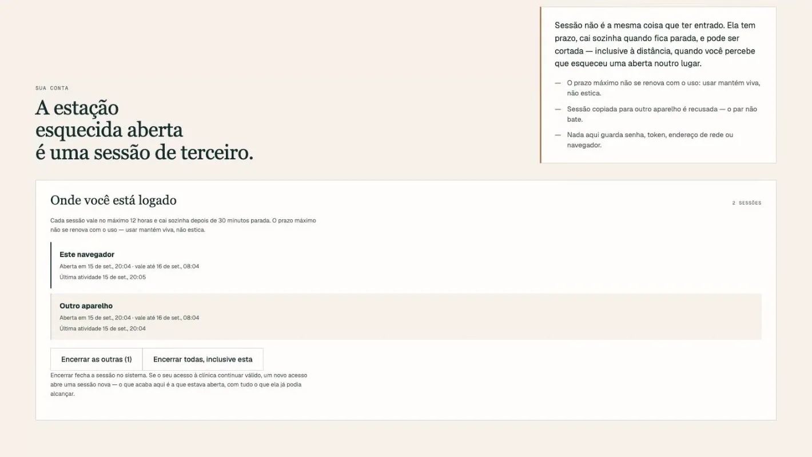

Operação digital de uma rede de clínicas
Site, atlas do corpo em 3D, calculadora clínica e prontuário sob LGPD

O que muda no seu negócio
A clínica para de ter um site que só lista especialidades e passa a oferecer duas ferramentas que o paciente usa de verdade. A autoridade médica vira motivo para marcar consulta.
No prontuário, a direção ganha o que sistema de prateleira não entrega: saber quem abriu qual ficha, por quê, e poder provar isso numa auditoria.
O problema
Clínica com décadas de história costuma ter um site que não converte essa história em consulta, e um prontuário de terceiro que cobra por usuário e trata dado de paciente como campo de texto.
Dado de saúde é o mais sensível que existe. Decidir acesso só pelo cargo, como quase todo sistema faz, é exatamente o que a lei não aceita.
O que o sistema faz
- Site institucional rápido, com páginas por especialidade, unidade e artigo.
- Atlas do corpo em 3D com oito sistemas, anotações e nomes em português.
- Calculadora de risco cardiovascular que roda inteira no navegador: nenhum dado do paciente sai do aparelho.
- Prontuário em que ninguém lê ficha por ter cargo: precisa de vínculo de atendimento ativo com aquele paciente.
- Receita que confere alergia antes de deixar assinar, a partir de catálogo de substâncias.
- Leitura preliminar de exame por IA, que só vale depois de validada por quem assina.
- Portal do paciente: conta própria, ficha de saúde, exames, remarcação.
- Registro de cada acesso, encadeado de forma que ninguém consegue reescrever.
Telas




O que prova a engenharia
- 1.105
- testes automáticos no prontuário
- 121
- gatilhos no banco guardando regras que a aplicação não consegue burlar
- 160
- casos de referência conferem a calculadora de risco
- 8
- decisões de arquitetura registradas por escrito
A diretora recebe recusa ao abrir um prontuário
E está certo. Ela tem o cargo, mas não tem vínculo de atendimento com aquele paciente. Acesso emergencial existe, exige justificativa escrita e fica em destaque na auditoria.
O teste passava e o número saía errado
Na calculadora, os dois casos oficiais tinham valores que zeravam um termo da equação, e o erro ficava escondido. A matriz de 160 casos existe para que um termo zerado nunca mais esconda nada.
Só dados de demonstração até a liberação
O servidor recusa CPF verdadeiro e e-mail de domínio real. O prontuário ainda não está liberado para uso com pacientes, e o próprio sistema garante isso.
Stack
Site em Astro 7 com React e three.js. Prontuário em React 19 com componentes de servidor, banco SQLite com Drizzle, rodando em Node. Aplicativo do paciente instalável.